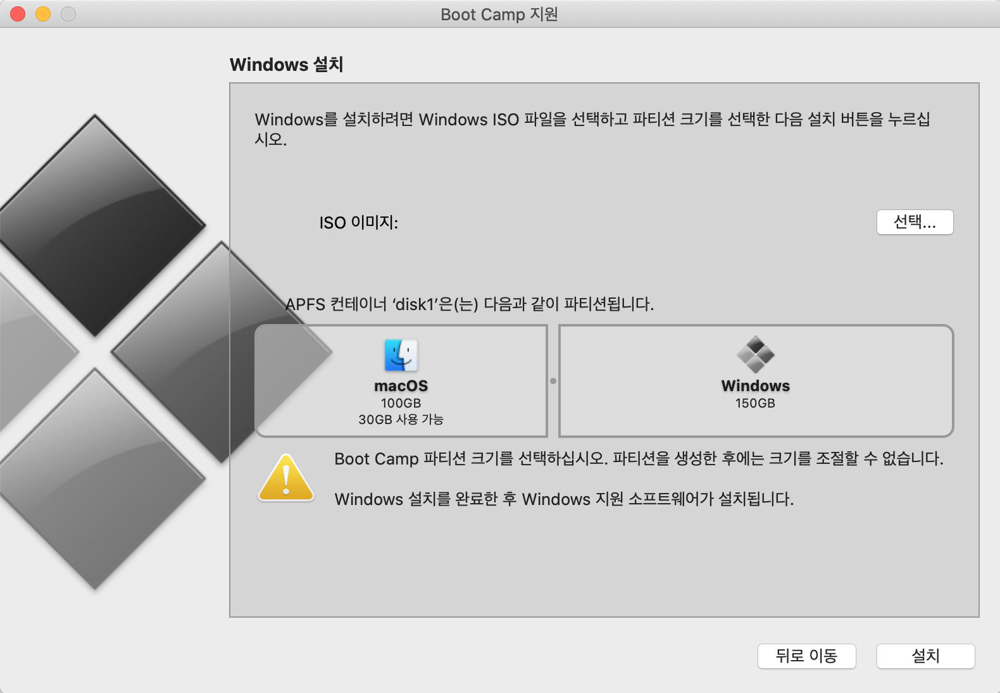
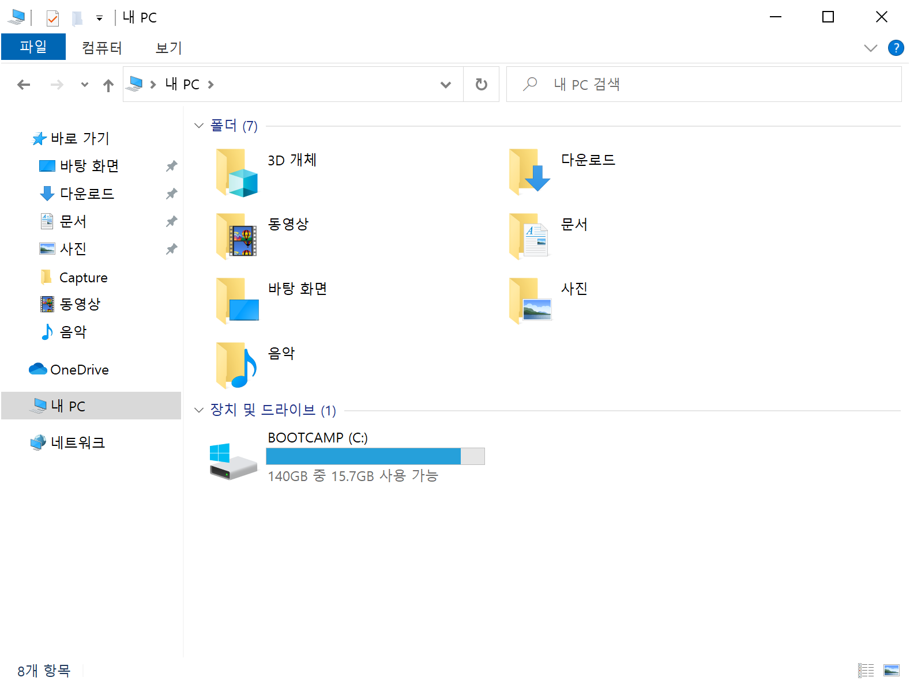

© 2020 Joy. All rights reserved.
지난 주에 (포스트를 쓰기 시작한 시점에서는 지난주였는데 완성하고 나니 지지난주가 되어있었다,,,) 에픽게임즈에서 GTA5가 무료로 풀렸다! 나는 피도 잘 못 보고 이런 폭력적인 게임은 그렇게 좋아하지 않지만 도대체 어떤 게임이길래 그렇게나 인기가 많은건지 궁금했고, 무엇보다도 GTA의 배경인 로스 산토스가 로스 앤젤레스랑 엄청 비슷하다고 해서 요즘 여행을 못가는 슬픔을 달랠 겸😂 랜선 여행에 도전!
내 라이브러리에 GTA를 추가하긴 했는데... 문제가 있었다! 나는 맥OS만 쓴지 꽤 오래 되었는데 GTA는 맥에서는 못 하고 윈도우즈에서만 할 수 있던 것이었다😨 사실 웬만한 게임을 할려면 윈도우즈를 써야 한다는 건 당연한 사실이고 나도 그걸 알고 있었지만 나는 원래 컴퓨터로는 게임을 잘 안해서 지금까진 아무 상관이 없었다. 물론 대한민국에서 윈도우즈를 안 쓰고 살 수는 없기 때문에 맥에서는 패러렐즈로 윈도우즈를 사용했다. 내가 윈도우즈에서 하는 작업은 그렇게 헤비한 작업이 아니었기 때문에 패러렐즈로도 충분히 커버가 됐었기 때문에 나는 굳이 부트캠프를 깔 필요성을 못 느꼈었다 (부트캠프는 운영체제 전환할 때 재시동을 해야 한다는 것이 너무 귀찮았음)
그치만 게임은... 특히 GTA는... 굉장히 헤비한 게임... 애초에 이런 게임을 맥에서 돌린다는 것 자체가 현명한 짓은 아니긴 하지만, 내가 가지고 있는 제일 최신(!) 윈도우즈 컴퓨터는 벌써 열 살이 다 되어가는 노트북인데 차마 거기에 돌릴 순 없었다😢 그렇다고 이 게임 하나 하자고 윈도우즈 컴퓨터를 또 살 수는 없는 노릇이니까! 그냥 퍼포먼스를 엄청 포기하고 게임 플레이에만 의의를 두려고 했는데, 인터넷을 열심히 뒤져봤지만 그 누구도 GTA를 패러렐즈에서 제대로 돌렸다는 사람이 없었다😔
드디어... 귀찮음을 무릅쓰고 부트캠프를 깔아야 할 때가 온 것이었다... 두둥
근데 사실 얼마 전에 맥북을 새로 사서 은퇴(?)한 맥북이 있었다. 여기는 맥OS 하이 시에라를 깔아놓고 혹~~시나 32비트 어플리케이션을 사용할 일이 생기면 가끔 꺼내 쓰려고 했었는데 (맥 OS 최신 버전인 카탈리나에서는 32비트 지원이 안 되기 때문이다 & 카탈리나가 불안정해서 말썽이라는 말도 엄청 많다) , 이왕 이렇게 된 거 여기에 부트캠프로 윈도우즈를 깔기로 했다!
못할 건 또 뭐 있나! 가자! (feat. 링피트 링 톤)

GTA5는 게임 크기만 90GB이다😮 근데 윈도우즈 운영체제 자체가 차지하는 용량도 있고... 어쩌구저쩌구... 해서 부트캠프로 윈도우즈 설치할 때 최소 용량을 40GB정도는 줘야 한다고 하길래 그냥 넉넉하게 윈도우즈에 150GB를 할당했다. 윈도우즈를 외장SSD에 설치할까 하는 생각도 해봤지만 내장SSD에 설치하는 것만큼의 속도가 안 나와서 또 게임에 지장이 갈 수 있다고... 뭐 이 맥북으로 맥OS 쓸 일이 얼마나 있겠냐 싶어서 그냥 부트캠프에 용량을 더 많이 줘버렸다! 맥을 아예 없애버리는 건 뭔가 . . . 무서웠다 . . .

파티션도 나눴고 윈도우즈 설치도 완료했다. 그런데...! 윈도우즈에서 와이파이를 못 잡았다!! 인터넷이 돼야 다른걸 할 수가 있는데 이거부터 안 되면 어쩌라는겨...? 식겁해서 찾아보니 Windows 지원 소프트웨어를 따로 받아줘야 한다네... 아이고 귀찮아라.
그런데 저기서 하라는대로 올바르게 포맷된 16GB 이상의 USB를 사용했는데도 계속 지원 소프트웨어를 저장할 수가 없다는 오류가 났다!!! 😡... 라고는 했지만 사실 하라는 대로 안 한 게 하나 있었다...
위에서 말했듯 이 옛날 맥북에는 최신OS인 카탈리나가 아닌 2년 전의 하이 시에라가 깔려있었기 때문에... 뭐 꼭 업데이트 해야돼? 안 해도 되겠지 뭐ㅋ 하고 그냥 했지만 안 하면 안되는 것이었나봐요...
우린 결국 이렇게 만나게 되었구나...
부트캠프에 할당되었던 파티션을 포맷하고 다시 맥OS쪽으로 합치고 카탈리나로 업데이트 하고 또 다시 파티션을 나눠서 부트캠프에 윈도우즈를 설치했다😩 근데 윈도우즈 설치하다가 발견한 사실!!! 부트캠프로 윈도우즈 설치할 때
이렇게 정체모를 파티션이 하나 생겨 있었는데 알고보니 저 OSXRESERVED 안에 Windows 지원 소프트웨어가 들어있던 것이었다! 그래서 USB는 애초에 필요가 없었다 두둥... 근데 카탈리나로 업그레이드 하기 전에 윈도우즈 깔려고 했을 때 저 파티션 안에 들어가봤더니 뭔가 파일이 손상돼있었는데 이건 내가 뭘 잘못했던건지 아니면 진짜 최신버전이 아니어서 손상돼있었던건지 확실히는 잘 모르겠음. 그냥 앞으로는 속편하게 하라는대로 할 것이다.
setup 고고싱~! 했는데. ... 윈도우즈를 통으로 다시 까는 것이 아닌가. 아니 나는 드라이버만 필요한데...? 진짜 어렵다... 한숨 푹푹 쉬며 다시 검색해보니 저 파티션 root에 있는 setup.exe가 아니라 BootCamp 폴더 안의 setup.exe를 실행해야 하는 것이었다😔
아니 이게 어려울 게 없는데 왜 이렇게 삽질을 한건지??? 깔 때는 화났는데 지금 쓰면서 보니까 그냥 어이없네
이거였다!!! 이거 설치하고 나니까
이렇게 Boot Camp 제어판이 생겨서 맥북의 키보드나 트랙패드 관련 설정을 할 수 있었다. 신기신기 (근데 날짜 설정을 제대로 하기 전에 찍은 스크린샷이네)
두근두근 설치 시작
오랜만에 보는 닷넷프레임워크... 응 알겠어~
처음엔 속도가 이렇게 나오다가 엄청 느려지기도 하고 그랬는데 검색하다 보니깐 KT에서 해외 다운로드를 막아놔서 그렇다고 VPN 쓰면 빨라질거라길래 그렇게 했더니 진짜 빨라졌었다.
40% 완료된만큼 컬러 포스터 나오는거 넘 짱이라고 생각함
얏호 드디어 실행!!!... 하려고 하는데

ㅠㅠ 진짜 이럴거야!??!?!!?! 그치만 이 문제는 간단히 해결했다 (64비트라면 32비트용과 64비트용을 둘 다 설치해야 한다는 말이 있어서 둘 다 했다. 64비트만 설치해도 될지도 모르지만 하도 많이 데여서 혹시 모르니깐)

150GB 중에 윈도우즈 자체 용량 10GB 빼고 140GB 중에... 15GB 남았다😂😂😂 진짜 윈도우즈 깔고 드라이버 깔고 바로 에픽게임즈 런처 깔고 GTA만 설치한 것임!!!
그리고 드디어 실행 성공!!! 눈물이 앞을 가린다,,,
이건 맨 처음 실행하니까 자동으로 제일 작은 창 크기로 플레이가 된건데 이건 너무 쪼끄매가지고 저는 1920*1200 창 모드로 플레이를 했습니다 그래야 그나마 봐줄만 하더라구요... 근데... 진짜 발열이 엄청 심해서 맥 5년 쓰면서 들어본 적이 없는 팬 소음이 나길래😱 무서워서 쿨러도 사드림💦
저의 맥북은 MacBook Pro Retina 13인치 (2015) 2.7GHz i5 인데 이 친구의 퍼포먼스는

ㅎㅎㅎ...
그래도 하고 싶었던 LA (LS?) 구경은 실컷 하고 다니는 중!! 😁
로스 산토스 지하철!

코리아타운을 본딴 리틀 서울ㅋㅋㅋ 진짜 똑같아 나 저기서 밥 먹은 적 있다!!!
산타 모니카 해변을 본딴 델 페로 해변!!! 여기도 진짜 똑같다!!! 그리고 여기서는 저 대관람차랑 롤러코스터를 타 볼 수도 있다 넘넘 신기하다😮
≪ 글 목록으로 가기 Trial & Error
Trial & Error